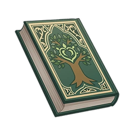

Sumeru · Books & Literature
The Folio of Foliage
Written by Sumeru scholar Sunitha Cosamvi, this three-volume biography recounts the Dendro Archon’s Cataclysm-era sacrifice and survives in a text altered by Irminsul’s edit.

A Sumeru Scholar’s Biography
The Folio of Foliage is a three-volume Sumeru biography of the Dendro Archon during a time of calamity. Its in-world author, Sunitha Cosamvi, says she records stories told by sages who followed the goddess and refuses to write her true name. The book is a retrospective account, not an eyewitness diary.
The Archon Quest identifies the pre-Cataclysm Dendro Archon as Greater Lord Rukkhadevata and the later Archon as Nahida. Keep that external identification distinct from the names available in the book’s current, post-Irminsul-edit text.
Volume I: The Black Tide
The first volume describes a catastrophe in which beasts emerge from the Abyss and a Black Tide of corruption spreads across valleys, deserts, and springs. The unnamed goddess grieves for the living, calms the destruction for a time, and then sets out on a final journey with her followers to save the land.
The text presents a poetic account of the Cataclysm and the goddess’s response. Its symbolic images should not be treated as a literal map of every battle or location.
Volume II: The Last Journey
The second volume follows the goddess into a ruined forest. Plants bloom in her footsteps, storms recede before her music, and the demonic forces are scattered. She then enters the hollowed heart of the world and gives up her remaining life; the book says that the goodness, peace, and wisdom she gave the world become the immortal Gaokerena and the earth itself.
That wording belongs to this book’s account. It should not be conflated with the separate Gaokerena described at the Harvisptokhm in later Sumeru quests.
Volume III: Memory and Dreams
The final volume describes the goddess’s continuing care for Sumeru: she hears wishes, watches over dreams, and is associated with the Sanctuary of Surasthana. It closes with images of memories and dreams surviving fire and loss, carrying the book from the Cataclysm-era sacrifice into the later age of the Dendro Archon.
The Text After Irminsul
After the Archon Quest Where the Boat of Consciousness Lies, the book’s in-game text changed. Nahida removed Greater Lord Rukkhadevata from Irminsul, and the altered text now assigns the Cataclysm-era account to the Dendro Archon known in Sumeru’s current history as Lesser Lord Kusanali. The earlier and later versions preserve the way that edit changed a document and the memories around it.
The book’s rewritten version is not a second independent account of the same events. Read it alongside the Traveler’s knowledge of the edit and the Archon Quest, which explains why the historical identity in the text changed.
This is an original CoreGG reading guide, not an official HoYoverse article or a reproduction of the game text. Source links below identify the records used so you can check the original context.
Sources & references
Check these sources for the original game text and reference trail.